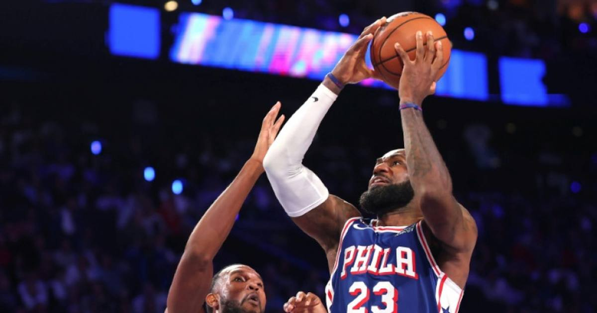

Sixers Erase 29-Point Deficit to Stun Cavs 114-106 in LeBron's Philly Home Debut
Down 29, down 24 at the half — then the Sixers ripped off a 15-0 fourth-quarter run to beat Cleveland 114-106. The biggest comeback win of LeBron James's 24-year career, in his first home game in a 76ers uniform.

The Wells Fargo Center crowd watched the biggest comeback win of LeBron James's 24-year NBA career Thursday night — and it came in his first home game as a 76er.
The Comeback
• Final: Sixers 114, Cavaliers 106
• The hole: Down 29 points, trailing 69-45 at halftime
• The rally: Outscored Cleveland 69-37 in the second half, capped by a 15-0 fourth-quarter run to take the lead for good
• The history: Biggest comeback win of LeBron's career (AP); first NBA team ever to overcome a 20+ point halftime deficit in a home opener (NBC Sports Philadelphia); Cleveland had been 155-0 when leading by 29, Philadelphia 0-156 when trailing by 29 (BVM Sports); Sixers' biggest comeback of the play-by-play era (since 1996)
The Cast
• Tyrese Maxey — 32 points
• Joel Embiid — 24 points
• Jaylen Brown — 21 in his Sixers debut
• LeBron James — 17 points, 10 rebounds, playing his first home game since signing a two-year veteran-minimum deal after leaving the Lakers
The Read
The Sixers are 2-0 — they spoiled the Knicks' ring night on opening night, then authored this. A 29-point comeback is the kind of win that tells you who a team is before Halloween. Cleveland, meanwhile, just blew one of the safest leads in basketball history.
Sources: Reuters — '76ers rally from 29 down to stun Cavaliers' · NBC Sports Philadelphia — 'Recap: Sixers erase a 29-point deficit to beat Cavs in home opener'
Gear up: Fanatics